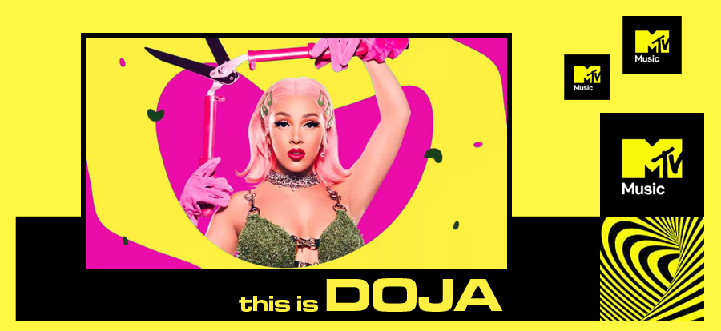

| MUSICAS| IDEIAS| Czs | |
|  | |
THIS IS DOJA CATAmala Ratna Zandile Dlamini (Los Angeles, 21 de outubro de 1995), conhecida profissionalmente como Doja Cat, é uma cantora, rapper e compositora norte-americana. Nascida e criada em Los Angeles, ela começou a fazer e a lançar música no SoundCloud quando era adolescente. A sua canção "So High" chamou a atenção da Kemosabe e da RCA Records, com a qual assinou um contrato discográfico conjunto aos 17 anos de idade, lançando posteriormente o seu EP de estreia Purrr! em 2014. Depois de um hiato da música comercial e o lançamento sem incidentes de seu álbum de estúdio de estreia, Amala (2018), Doja Cat ganhou sucesso viral como um meme da internet com seu single de 2018, "Mooo!", uma canção sobre ser uma vaca. Capitalizando em sua crescente popularidade, seu segundo álbum de estúdio, Hot Pink (2019), alcançou o top 10 da Billboard 200 dos Estados Unidos e gerou o single "Say So", que liderou a parada Billboard Hot 100 após o lançamento de um remix com Nicki Minaj. Este álbum foi seguido por Planet Her (2021), que passou três semanas consecutivas no número 2 na Billboard 200 e gerou os singles top 10, "Kiss Me More" (com SZA) e "Need to Know". Descrita pelo The Wall Street Journal como "uma rapper tecnicamente habilidosa com um forte senso melódico e uma presença visual ousada", Doja Cat é conhecida por criar vídeos musicais e canções que alcançam popularidade em aplicativos de redes sociais como o TikTok. Ela também é bem versada na própria internet, e é famosa pela sua personalidade absurdamente humorística e presença online. Além das nomeações para onze Grammy Award, Doja Cat recebeu inúmeros prêmios ao longo da sua carreira, incluindo um Guinness World Record, um Billboard Music Award, cinco American Music Awards e três MTV Video Music Awards. |
|
NETINHO SOOARES@netinhosooares |
|